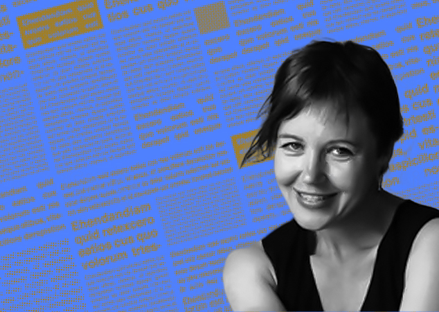
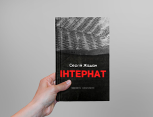
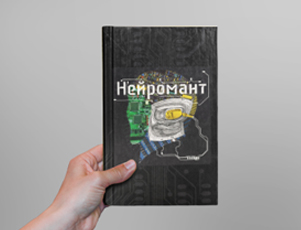

//= templates/search.html Головна Читати Читати Рецензції Добірки Уривки Усі Добірки 9 книжок від композиторки Алли загайкевич 06.09.2017 - Катерина Котвіцька  3 700 520 Добірки 11 видань, які рекомендує дарувати до Дня закоханих книгарня «Є» 13.02.2017 - Читомо наскрізний банер  1 220 Рецензії «Інтернат» Жадана: дорога до тихого дому 06.09.2017 - Євгеній Стасіневич 2 320 Добірки 13 жахастиків і примарок з дитячих книжок 27.07.2017 - Аліна Штефан Добірки 9 книжок від композиторки Алли Загайкевич 06.09.2017 - Катерина Котвіцька 6 900 Рецензії «Зеро К» Дона Делілло: замовкни, щоб я себе (тебе?) 12.09.2017 - Ірина Ніколайчук 6 900 520 Добірки 11 видань, які рекомендує дарувати до Дня закоханих книгарня «Є» 13.02.2017 - Читомо  2 320 Рецензії «Нейромант» Вільяма Ґібсона: ретрофутуристичне візіонерство 27.07.2017 - Читомо 1 220 Рецензії «Інтернат» Жадана: дорога до тихого дому 06.09.2017 - Євгеній Стасіневич 2 320 Добірки 13 жахастиків і примарок з дитячих книжок 27.07.2017 - Аліна Штефан Добірки 7 книжок від IT-підприємця Ярослава Ажнюка 06.09.2017 - Катерина Толокольнікова 12 290 Дивитися ще //= templates/black.html